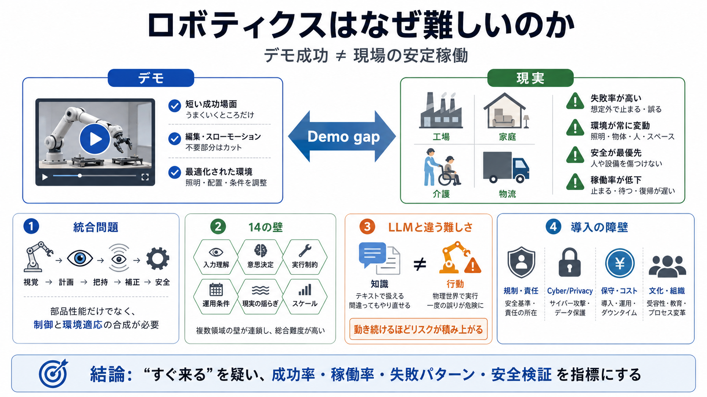

Humanoid Robotics Challenges [2026] | RoboZaps Blog
Which company is leading in solving humanoid robot challenges? : Different companies lead in different areas: Sanctuar…

Which company is leading in solving humanoid robot challenges? : Different companies lead in different areas: Sanctuar…
IDTechEx's report, "Humanoid Robots 2026-2036: Technologies, Markets, and Opportunities", provides a detailed technical …
Cost Leadership: Chinese humanoid robots cost significantly less than Western equivalents. Unitree's G1 sells for $13,5…
Energy Efficiency: Humanoid robots must operate for extended periods on battery power. Improving energy efficiency while…
While detailed specifications and production volumes have not been finalized publicly, the timeline underscores confiden…